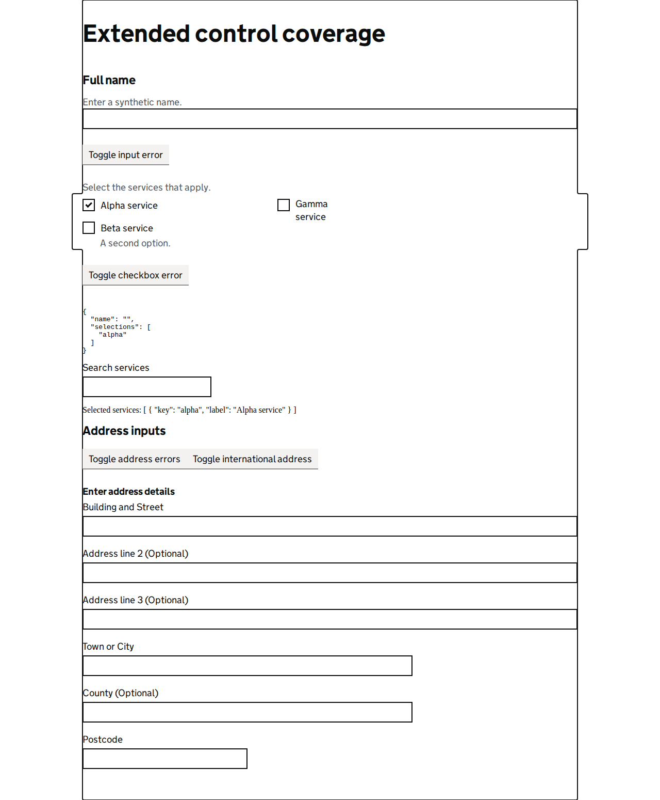

Back to Odhín report
Accessibility page-state summary
skip link moves focus to the main-content target for /coverage/extended-controls / skip link moves focus to the main-content target for /coverage/extended-controls
Automated heuristics support investigation; they do not replace screen-reader testing or establish WCAG conformance.
View page screenshot

Page summary snapshot captured after behavioral checks; engine evidence records the scanned state.
Behavioral checks
- No behavioral checks requested.
Engine summary
URL: http://localhost:4200/coverage/extended-controls
Strict mode: on
axe
passed
0 total, 0 unexpected; 0 node(s) needing investigation
wave-like
passed
0 total, 0 unexpected; 0 node(s) needing investigation
screen-reader
passed
0 total, 0 unexpected; 0 node(s) needing investigation